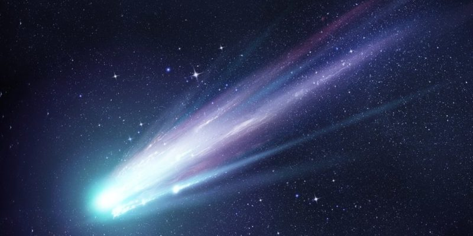

Los cometas son cuerpos celestes pequeños y frágiles que orbitan alrededor del Sol. Están compuestos principalmente de hielo, polvo y roca, y tienen órbitas muy elípticas que los llevan desde las regiones exteriores del sistema solar hasta las cercanías del Sol.
Los cometas son famosos por su cola brillante, que se forma cuando el hielo se vaporiza y se arrastra por la radiación solar. Algunas curiosidades sobre los cometas son:
El cometa Halley es uno de los cometas más famosos, ya que se puede ver desde la Tierra cada 76 años. Fue descubierto por el astrónomo inglés Edmond Halley en 1682 y se espera que sea visible de nuevo en 2061.
